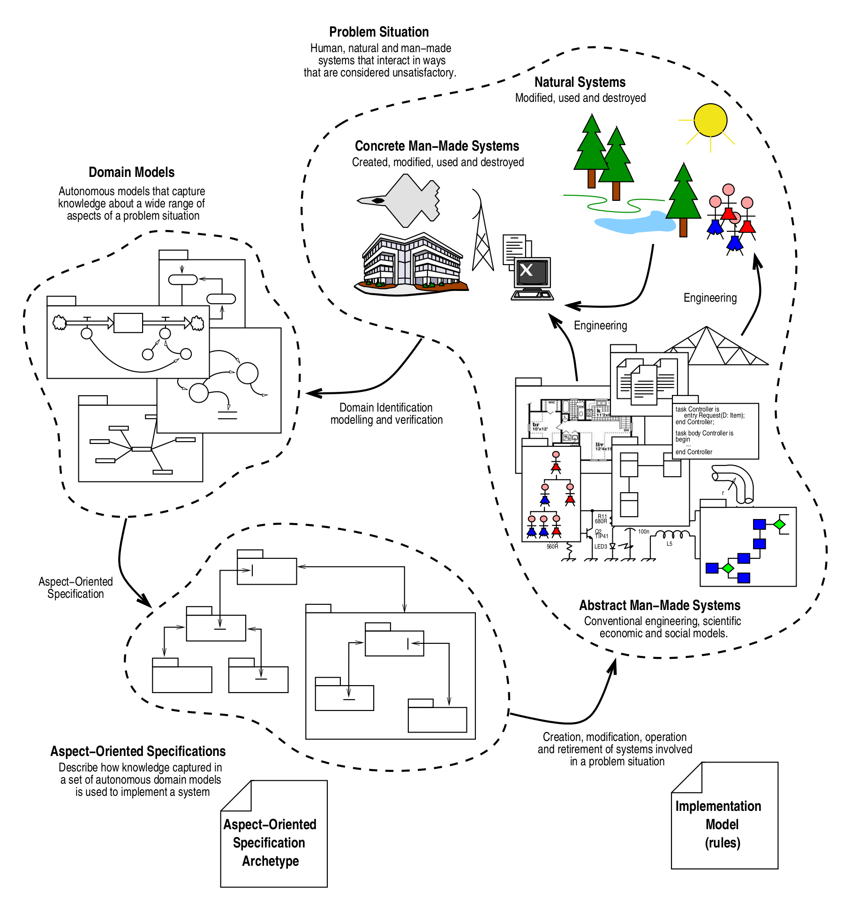

Package au.edu.anu.rscs.aot
Aspect-Oriented Thinking - classes for software specification and generation.
Aspect-oriented thinking (Flint, 2006), aka AOT, relies on formal specification archetypes to register the rules used to assemble elements from specific domains of knowledge to form specifications for systems with a clearly defined specific purpose. If these rules are followed, the resulting specification will have precise meaning and can be used to generate an operational system (e.g. some specialised piece of software).AOT specification archetypes comprise a set of constraints (rules) for bringing together concepts from widely differing domains of knowledge, to form specifications.
These specifications are not generic - they specify systems of a specific type. The meaning of these specifications is understood by special purpose tools that translate or interpret these specifications into real systems, simulations etc. That is, these tools can ONLY process specifications that comply with a specific archetype.
How is AOT different to other approaches?
AOT was built to address problems with early model-driven approaches which generally attempt to build generic code generators that hope to support the construction of any software system. This generic approach has had limited success. General use of things like UML is very limited in practice. On the other hand, specialised approaches to MDE have more recently emerged - for example GUI generators within IDEs, and application frameworks that often include code generators for specific purposes. This is similar to AOT, but they differ in that they don't explicitly separate the equivalent of archetypes, specifications and the tools, and they tend to hard-code attempts to bring together knowledge from multiple domains (if they do this at all).
Applications like Stella certainly have rules for assembling models and a tool that can only process such models. However, the models only comprise elements of systems dynamics. While these elements represent concepts from other domains (eg. ecology), Stella (as a tool that processes the models) has no idea what they are, and can only process them in terms of the system dynamics approach. Because AOT tools are tied to a specific archetype, they can do domain specific things.
In many ways, AOT can be thought of as applying "separation of concerns" to current approaches to MDE and even tools like Stella.
- A language used to form specification archetypes
- Specification Archetypes that describes rules for how elements from various domains can be assembled to form specifications for a specific type of system.
- One or more Specifications formed by following a particular specification archetype.
- One or more tools used to process specifications that comply with a specific archetype.
- The knowledge domains we draw on to form specifications.
This library contains:
- the archetype for archetypes, i.e. how an archetype to specify anything should be written;
- classes to load an archetype and check it against the archetype for archetypes, to make sure it is a valid archetype;
- classes to load a specification file and check it against an archetype it is supposed to comply to.
Archetypes are implemented as Trees (cf. the omugi library) and
specifications are implemented as TreeGraphs.
References
Flint SR (2006) Aspect-Oriented Thinking - An approach to bridging the disciplinary divides. PhD, Australian National University
- Author:
- Jacques Gignoux - 6 oct. 2021
-
Class Summary Class Description TextTranslations Error messages to use with specification archetypes. -
Exception Summary Exception Description AotException The class to use for exceptions occurring within the aot library